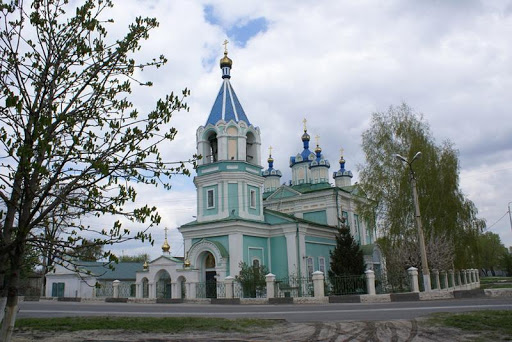
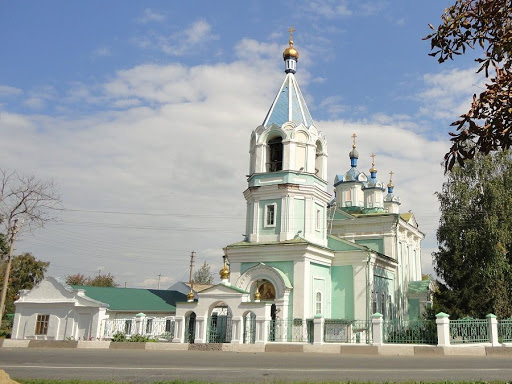

Ильинская церковь
- Режим работы: с 9:00 до 18:00
- Цена за вход: вход бесплатный
- Местоположение: ул. Хмелева, 1, Старый Оскол, Белгородская обл.
Храм во имя Святого Пророка Ильи был
построен в 1872 году в Ездоцкой слободе,
а 26 ноября 1873 года он был освящен.
Каменное здание церкви строилось на
средства прихожан — государственных
крестьян слободы Ездоцкой.
Расположена церковь в северной части
слободы Ездоцкой.

В советский период церковь не закрывалась и
богослужения продолжались, за исключением
короткого периода, по причине отсутствия
священнослужителя. В августе 1938 г. храм
превратили в амбар, но уже 13 февраля 1939
г. исполняющий обязанности секретаря облисполкома
Журавлёв телеграфировал в столицу:
«Ильинская церковь из-под зерна освобождена
и передана в пользование верующим».

С 18 июля 1995 г. храм является памятником
архитектуры, построенным в эпоху эклектики.
Иконостас деревянный, с позолоченной резьбой,
украшен растительным орнаментом, в три яруса.
Сохранился в первозданном виде.
Вы можете узнать об этом храме подробнее на сайте http://stal-nevsky.ru/?page_id=818.